Using Distributed Technology to Make Music in the Time of the Attention Economy
Tate Carson, MM, MFA
For my dissertation I created an app called Sounds Aware that allows users to record soundwalks and share them so that other people experience them. The creator of the soundwalk records their perceptions of the resorativness of a specific place on the walk, these answers are then sonified for whoever experiences the walk later to hear. I wanted to create a social app that was restorative as a step against the attention economy. Sounds aware does this by encouraging experience of nature that can restore our attention that has been drained by the attention economy. I also use decentralized technology that keeps data in the hands of creators so it can not be used as fuel for advertising.
Theoretical Background
Attention Economy
With Sounds Aware I wanted to make an application that went against some of the patterns of our current
technology by using distributed technology that enables existing outside the attention economy which is based on
an advertising model, where services are offered for free, but we pay in our attention and data. The issue is that
our attentional currency is a scarce resource
Hyper Attention
characterized by switching focus rapidly among different tasks, preferring multiple information streams, seeking a
high level of stimulation, and having a low tolerance for boredom
N Katherine Hayles. Hyper and deep attention: The generational divide in cognitive modes. Profession, pages
187–199, 2007.
N Katherine Hayles
N Katherine Hayles calls the type of attention we have with technology hyperattention
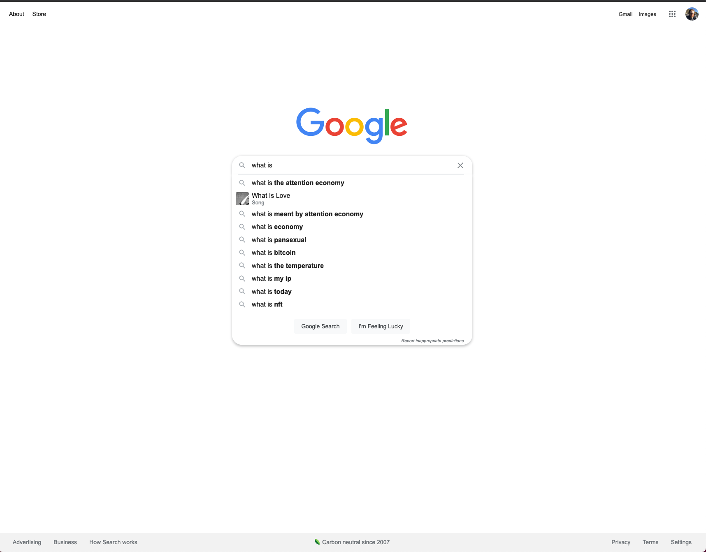
This is a screenshot I took of a google search where i was given a series of guesses as to what I was looking for.
Google knew I may have wanted to search about the attention economy because it keeps a record or all of your
searches and tries to guess what you might want to see. Google, and other tech companies, track your searches and
clicks to create what Digital Studies theorist John Cheney-Lippold calls the new algorithmic identity where they
build an imagined identity using statistical models that seek to determine a user’s gender, race, or class on
order to advertise to them in an effective way.
How to resist?
How can the attention economy be resisted? We must redesign the technologies that encourage a capitalist
perception of time, place, self, and community. We can use decentralized technologies that don’t rely on attention
capture. Also, deepening one’s concept of place will extend an awareness of history and current connection to
everything around them. Odell suggests that “doing nothing” moves our attention from economic concerns to the
physical, place based domain [55]. Doing nothing, or sitting out the attention economy is an active proposition
and “entails an active process of listening that seeks out the effects of racial, environmental, and economic
injustice and brings about real change [55].”
Because of these platforms’ flaws we should not be using them to distribute and make our art. These platforms
reward a way of being that is not beneficial to society. They resist the concept of interconnection, by
emphasizing our differences and not allowing us to show fuller versions of ourselves. We must “stand apart”[55] as
Odell suggests, and create new systems for communication on the internet.
Attention Restoration Theory
Stephen. Kaplan. The restorative benefits of nature: toward an integrative framework. In: Journal of Environmental Psychology., 15:169–182, 1995.
Fascination
Being Away
Extent
Compatibility
Psychologist’s Rachel and Steven Kaplan developed Attention Restoration Theory in 1989 [43]. They found that the natural environment aids in stress reduction by providing a “restorative environment” that reduces the fatigue caused by directed attention [42]. Attention Restoration Theory (ART) claims that we use directed attention in our daily lives to function. Sustained directed attention leads to cognitive depletion and mental fatigue [43].
For an environment to be restorative ART requires it to have these four components: fascination, being away, extent and compatibility [42].
1. Fascination is the opposite of directed attention. It is necessary for attention restoration. It could include
any activity that takes little effort but also holds your involuntary attention such as listening to an engrossing
piece of music.
2. Being Away requires one to not only be away from a non-restorative environment physically but also mentally.
One could be on a walk with their dog, away from the computer but still thinking about the tasks the need to be
done for the day. That would not fulfill the being away requirement for a restorative environment.
3. Extent is gained from an environment instilling feelings of connectedness with the larger world in a person. In
this way, the environment engages with one’s complete attention.
4. Compatibility is important for restorativeness because one environment might not be restorative to everyone. A
serene lake might be restorative to most but those who don’t enjoy the outdoors for whatever reason would not find
it restorative.
Perceived Restorativeness Soundscape Scale
Sarah R Payne and Neil Bruce. Exploring the relationship between urban quiet areas and perceived restorative benefits. International journal of environmental research and public health, 16(9):1611, 2019.
Sarah R. Payne has developed the Perceived Restorativeness Scale (PRSS), a soundscape specific survey meant to gauge the perceived restorativeness of a given soundscape. This scale is what I base the questions off of that users are asked when they create a sound walk with sounds aware.
Artistic Background
Soundwalk
“any excursion whose main purpose is listening to the environment.”
Hildegard Westerkamp. Soundwalking. Sound Heritage, 3(4):18–27, 1974.
Hildegard Westerkamp.
Hildegard Westerkamp, a soundscape composer, regarded sound as the best way to understand ecological crises. Westerkamp claims that artists who work with sound are the best equipped to consider issues of the acoustic environment.
She considers soundwalking to be “any excursion whose main purpose is listening to the environment.”
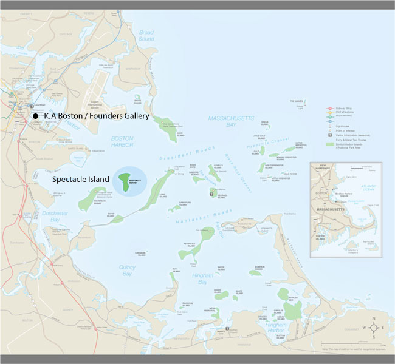
Teri Reub's Core Sample
http://terirueb.net/core-sample-2007/
An important example of a GPS soundwalk, or locative media, is Teri Reub’s Core Sample.[76] Participants walked around a specific location with earbuds in to listen to sounds that have been programmed to play when they’re in a specific location. Her work is located in Boston’s Harbor Islands and invites listeners to “Discover unique combinations of natural and processed sounds - that correspond to the Spectacle’s many subterranean layers, as well as its present soundscape.”[29]
Previous work
Sounds Aware (2019) - Version 1
Sounds Aware is a web application that runs on a smartphone and uses
machine learning to detect human-made sound (anthrophony) and masks it
with ambient music as a user walks around their environment. Though the
model is pre-trained with the author’s local environmental sounds, the
user can train the model further on their unique soundscape so that each
user gets a personalized experience. After the training process, the
user can listen to ambient music based on traits of the surrounding
anthrophony. If the app senses less anthrophony and more biophony or
geophony, then the music fades away, bringing the user’s attention to
the anthrophony.
The idea for Sounds Aware came while walking with dog Lucy around the
lakes by my house. When I first started walking her I would listen to
podcast or music on headphones for the entire walk because I found it
difficult to fill the time with my own thoughts. I would hear the sounds
of nature occasionally coming through my music and this made me want to
take the head phones out and just listen.
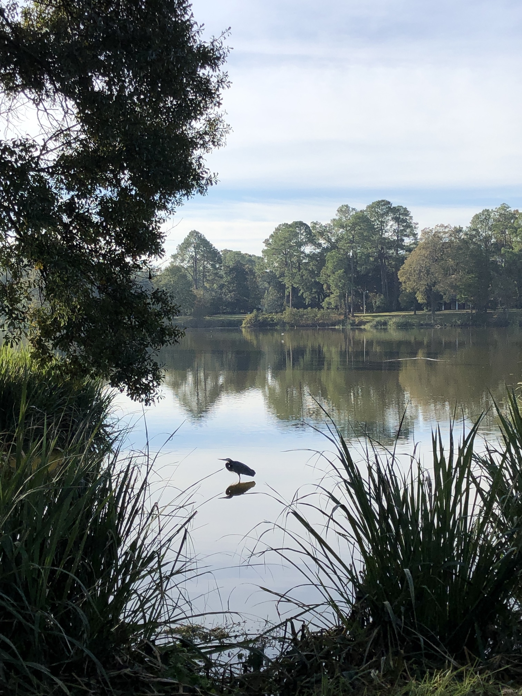
The problem came when I tried to do that and realized there, while this
is a beautiful bit of nature, it is by peoples houses and some major
roads.
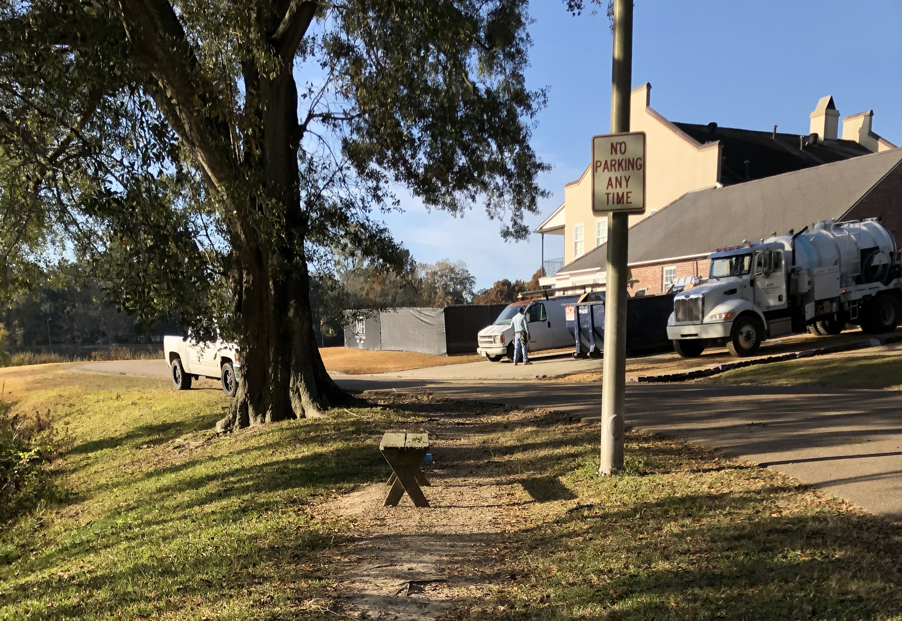
So in addition the birds I could also hear the noise of lawnmowers,
home construction and cars driving by.
And sometimes it sounds like this. This made me want the best of both
worlds. I wanted to create a system that would play music if it heard
'noise' and play nothing if it heard nothing. This I thought would help
me focus my attention more on nature and less on how much I didn't want
to hear the noise. This inspired Sounds Aware.
To what extent might the technologies of communication, art and
entertainment serve as 'prostheses' that would provide us with
experiences of wilderness that would not only enrich our human
identity but help us to preserve and expand the domain of the
non-human world?
David Dunn. Wilderness as Reentrant Form: Thoughts on the Future of
Electronic Art and Nature. Leonardo, (4):377, 1988.
- David Dunn
Composer David Dunn poses an inspirational question:
A goal of Sounds Aware is to shift attention to geophonic and biophonic
soundscape away from the anthrophonony.
The goal of Sounds Aware is to bring the user’s awareness to the
geophonic and biophonic soundscape, which is often so masked by noise
pollution that it has fallen out of awareness for many of us. Sounds
Aware seeks to shift the user’s concept of nature to something that has
no starting or end- ing point; it is all around us. The app brings
awareness by focusing attention on the environment. Because of the pre-
dominance of eye culture [3], our reliance on seeing rather than
listening as a primary means of sensing the world, it is a lot to ask of
a person who might be uninterested in acoustic ecology to “just listen”
to their environment. But, if you give them a tool that urges listening
in the quieter places, where the natural world will be more audible,
there is a better chance of them engaging with those sounds because the
app focused their perception. Sounds Aware is a means of technologically
mediated “ear cleaning,” as described by R. Murray Schafer in Ear
Cleaning: Notes for an Experimental Music Course [13].
What did I learn?
The app would be more useful with user accounts.
User training of the machine learning algorithm directly on the phone
is not accurate enough to understand more than a few sounds but might
be viable in the future.
Sounds Aware (v2) App Tour
The home screen shows all stops on the same page from all users. This provides a different way to explore
what other people have been doing.
The discover page shows each soundwalk created by other users
Going on a soundwalk (walking the dog)
Creating a soundwalk
This is the start of the walk. Its pretty quiet but you can hear some noise in the background
and this is what the phone interaction looked like
Then there was another stop at the lake
and the phone looked like this
How is the app made?
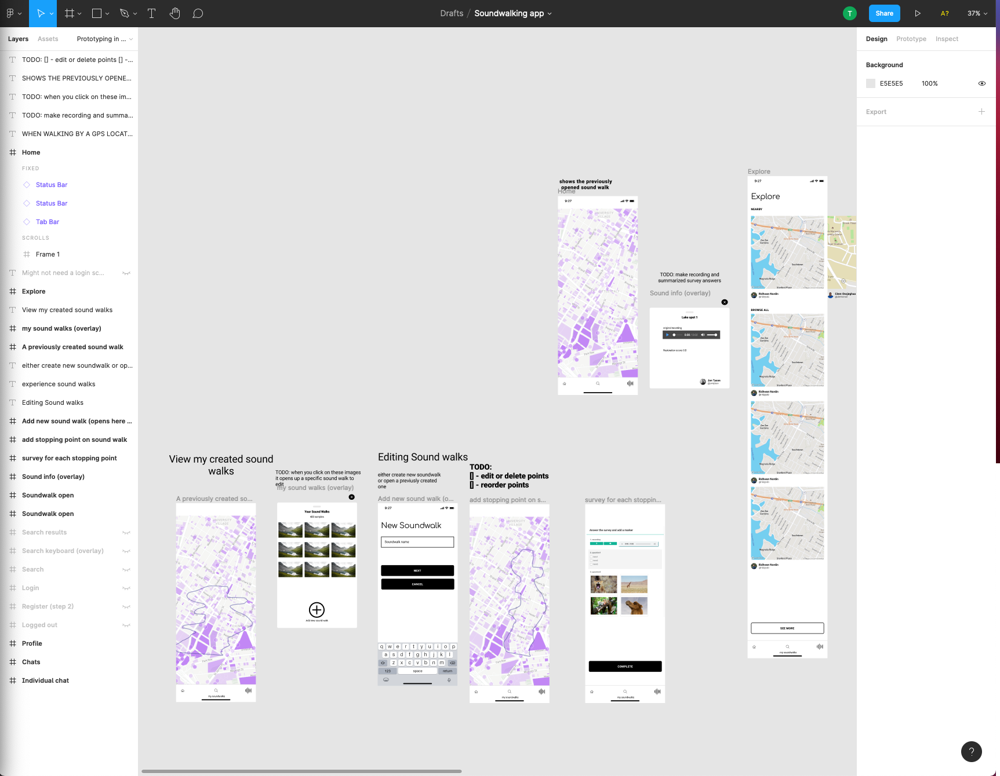
Planning Process - Figma
Before starting to develop the app I made a design in Figma, a tool for prototyping apps. The great thing
about Figma is that it allows you to prototype interactions as well as the interface. This helps you reason about
how the app will work before getting lost in the code.
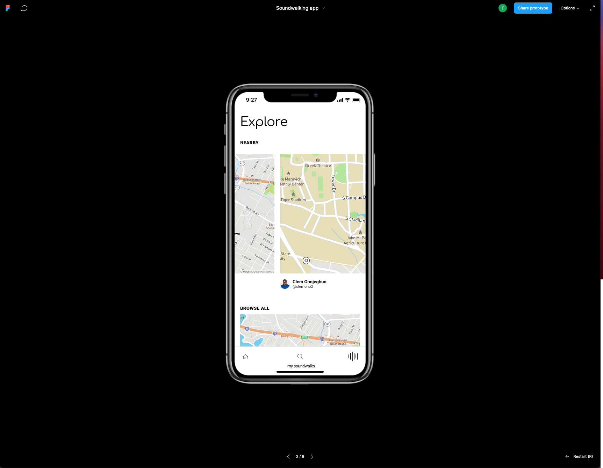
Present mode allows for testing the user interaction
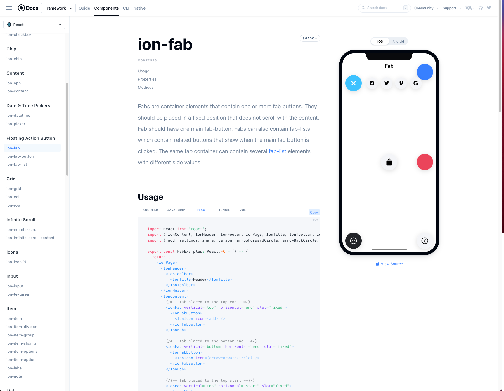
Ionic Framework is a UI toolkit with prebuilt elements. It makes developing with react much easier. With one
codebase you can target a mobile web app, a PWA or a native mobile app on IOS or Android.
I used many of the components in my app
3Box
Identity and Auth
Storage
Messaging
3Box is a framework that helps with building decentralized apps with IFPS and OrbitDB. It provides an
easy-to-use API
that handles identity, authorization, storage and messaging.
The identity and auth allow for users to login to an app without the developer having to manage user data.
The storage API can hold data specific to one user such as documents, preferences or settings.
The messaging API allows for the creation of threads, a feed that can be subscribed to that create the basis for a
distribute database.
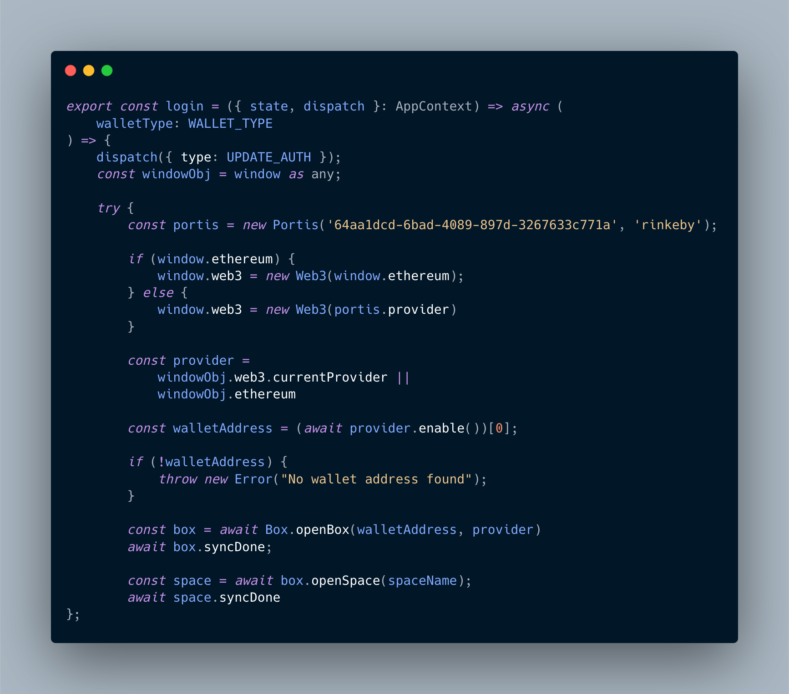
Authorization
Here is the login function. We access portis, an ethereum wallet that allows users to login without having to
install extra software. It helps to link your unique wallet address, which is your identity, to 3box in order to
open your personal data box and space.
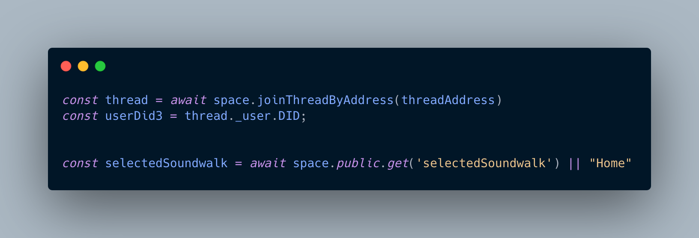
After authentication we can open a thread that contains a list of other threads that contain all of the soundwalks
created by users of the app. The selected soundwalk here is a way of recording which soundwalk a user was viewing
or editing previously.
Data Organization
Public thread
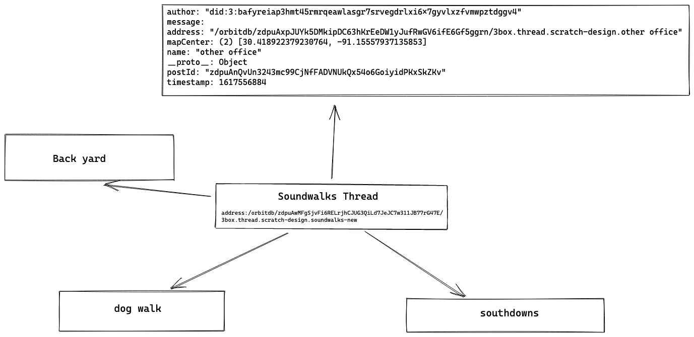
That thread that we connected to in the last slide is how each soundwalk is found. Every time a user creates
a soundwalk this data gets added to the thread.
Soundwalk thread
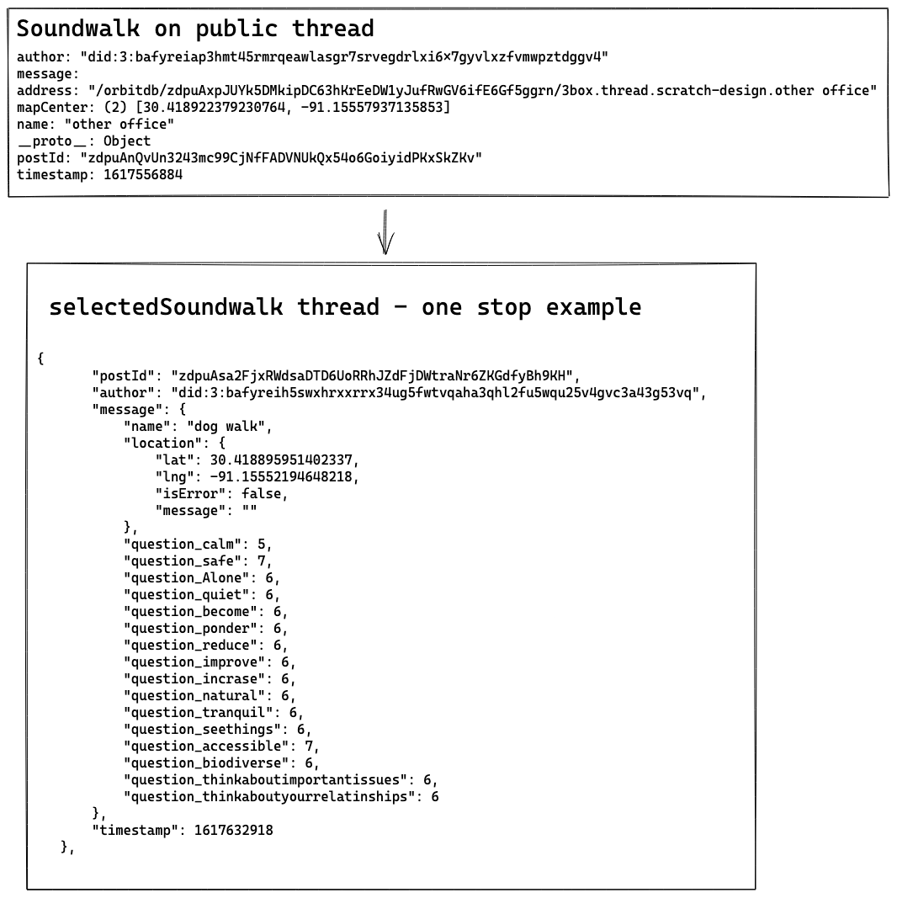
The actual data for each soundwalk is stored in their own individual threads which have a reference in the
original soundwalk thread. Here we can see the thread contains the name of the soundwalk, the location of one
stop, and the survey answers that the user made for that stop.
Survey Sonification
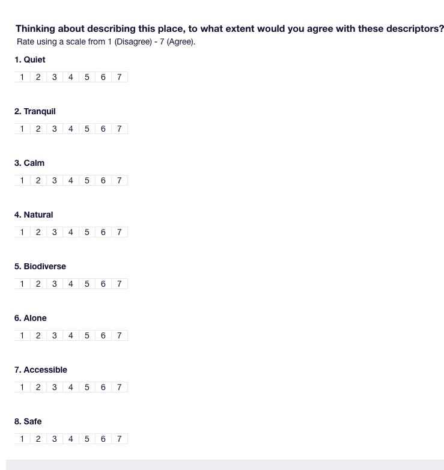
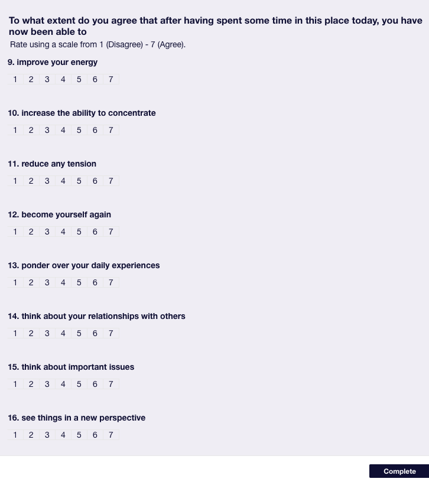
Users are asked these questions every time they want to make a stop on their soundwalk. These questions are
based off of Sarah Payne's Perceived Restorativeness Scale (PRSS) mentioned earlier. These questions provide the
basis for the sonification of soundwalks that users can hear on the discover page.
Low - Medium - High survey examples
Here are examples of low, medium and high restorativeness scores
Background sounds: rustling leaves and waves samples
Before mentioning exactly how the survey data was mapped I'll speak a bit about what types of sounds you hear and
the inspiration for them. I wanted to base the sonification on an imaginary wind chime because of these beautiful
sounding chimes in my neighborhood that I hear while walking my dog.
The wind chimes are driven by a number of chime samples in order to have fuller control over them.
Wind Chimes
Tuning - La Monte Young's Well Tuned Piano
Note groupings from Young chords - Opening Chord, Magic Chord, etc.
Gann, Kyle. 1993. “La Monte Young’s The Well-Tuned Piano.” Perspectives of New Music 31 (1): 134–62.
Chord mappings
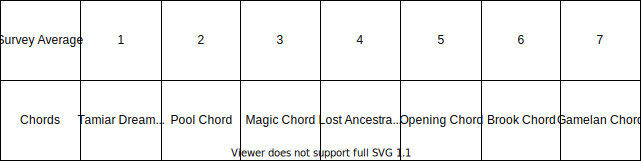
These chords change in the sonification depending on the average survey answers. I arranged them in an order
I perceived to be more to less restorative sounding.
The rhythms that you hear are driven by the fibonacci sequence which controls the duration and frequency of notes.
This provides a pattern that I thought might sound natural, sometimes slow when reaching the peaks and then faster
when between them. The survey average is also mapped to the rhythm by controlling the probability that we hear a
note, with a lower survey average mapped to a higher event probability.
Wind
Amplitude -> survey average
Pitchshift mix and pitch -> survey average
The wind frequency shifts with the highpass and lowpass filters cutoff changes. These happen randomly. The
amplitude of the wind is mapped to the survey average so that a low average creates a higher amplitude. The mix
and pitch of the pitch shift is also mapped to the survey average so that the pitchshift sounds more distorted
with a low average.
Panner and Listener
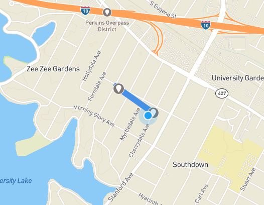
The distance a user is from a soundwalk stop is mapped directly to the Listener of the Panner node, giving
the impression that you are walking up to a virtual wind chime by changing its amplitude.
Try it out!
https://calm-long-aerodynamic-sprite.fission.app/This is a beta testing url. There is one at soundsaware.com but its not quite ready to go live yet. I am receiving feedback from testers.
Conclusions
Future Work
There are a few things I would like to improve on in the future:
1. The database is being deprecated by 3box so it needs to be replaced if this is to keep working. Using a newer
system will hopefully make the app faster.
2. Make the app look more unique with branding.
3. Fix many random bugs that pop up.
4. Get more users and learn what they might want from an app like this.